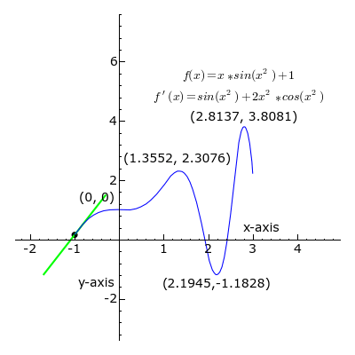

"Dopo la salita c'è sempre la discesa", si usa incoraggiare per smorzare l'affanno provocato da un cammino ripido. È naturale accorgersi che in salita la fatica aumenta: il respiro si fa più corto, il passo rallenta e i muscoli lavorano di più. In discesa, invece, il movimento sembra più fluido e meno impegnativo. Ma qual è la ragione di questa differenza? E quali leggi fisiche e matematiche spiegano il saliscendi della montagna?
Pendenza e lavoro
Camminare sembra un movimento semplice e automatico, tanto che per la fisica il lavoro meccanico risulta zero. Il lavoro è infatti definito come il prodotto tra una forza necessaria a spostare un corpo e lo spostamento nella stessa direzione della forza. Quando camminiamo, la forza in gioco è il nostro peso, che agisce verticalmente verso il basso; il terreno le oppone una reazione uguale e contraria, annullandone l'effetto. Per questo motivo il lavoro complessivo appare nullo. In realtà, i muscoli devono comunque generare forze per muoverci in avanti, vincere gli attriti e sollevare le gambe: queste componenti hanno una direzione parallela allo spostamento, di conseguenza il lavoro non è effettivamente nullo.
Perché in salita si fatica di più che in pianura?
Il motivo per cui si fa più fatica a camminare in salita rispetto che su una superficie piana è che, oltre all’energia necessaria per spostarci orizzontalmente,
dobbiamo aggiungere anche quella per sollevare il nostro corpo verso l’alto. Questo aumento di sforzo può essere spiegato ricorrendo al concetto fisico del
piano inclinato: una macchina semplice che ci mostra come, su un pendio, serva più forza per vincere la componente della
gravità che agisce lungo la salita e tende a far scivolare il corpo verso il basso.
Il peso del corpo agisce sempre verso il basso, ma sul piano inclinato questa forza può essere scomposta in due parti:
- una forza perpendicolare al terreno, che viene annullata perché il terreno sostiene il corpo;
- una forza parallela al terreno, che è quella che tende a farlo scendere lungo il pendio.
Questa seconda forza è proprio quella che il corpo deve superare per salire: più il pendio è ripido, più questa forza aumenta.

Dal punto di vista matematico, questa forza si calcola con la formula:
F = P × sin(α)
dove P è il peso del corpo e α è l’angolo di inclinazione del pendio.
Con un’inclinazione di circa 17° (corrispondente a una pendenza del 30%), per una persona di 70 kg la forza da vincere ad ogni passo è equivalente a circa 20 chili-peso: è come se ad ogni passo dovesse
sollevare in su un peso di 20 kg. Se un passo è lungo circa 60 centimetri, il lavoro extra richiesto per ciascun passo risulta di circa 12 chilogrammo-metro, pari a circa 120 joule, cioè circa 28 piccole calorie.
In altre parole, ogni passo in salita corrisponde a un vero e proprio “sollevamento” del corpo, perché si guadagnano circa 18 centimetri di altezza. Su distanze più lunghe, come 5 km di salita, tutto questo lavoro si somma,
comportando un dispendio energetico aggiuntivo di circa 246 kilocalorie, solo per vincere la pendenza, oltre a quanto già consumato camminando in piano.
Bisogna anche considerare che, con la fatica della salita, i passi tendono ad accorciarsi. Per coprire la stessa distanza sarà quindi necessario fare più passi, aumentando
ulteriormente il lavoro e il consumo energetico complessivo.
Derivate e dislivello
Le derivate sono uno degli strumenti più potenti della matematica, in quanto permettono di misurare il tasso di
variazione istantaneo di una variabile rispetto a un’altra. Per spiegarle intuitivamente, si può pensare prorpio
alle montagne.
Immagina di essere in cima a una montagna e di dover scendere: la funzione f rappresenta l'altezza della montagna
nel punto x, mentre df/dx ci dice quanto velocemente cambia mentre ci muoviamo lungo il pendio. Se la pendenza è
dolce, la derivata sarà piccola, perché l'altezza cambia lentamente.
In un contesto geometrico
la derivata ci dice dunque il dislivello, o pendenza, di un grafico, ad esempio. Il dislivello è infatti la
differenza di quota tra due punti. Mentre la tangente è il modo per vedere questa inclinazione: è la retta che "tocca" la derivatain un certo punto.

Il teorema che spiega perché a ogni salita segue una discesa
"Dopo la salita c'è sempre la discesa" non è solo un incoraggiamento: è un fatto dimostrabile con la matematica.
Lo dice il Teorema di Rolle: se una funzione ha gli estremi uguali ed è continua nell'intervallo chiuso e derivabile nell'intervallo aperto,
allora esiste almeno un punto in cui la derivata prima è zero. Tradotto: ogni montagna ha almeno una cima o un altopiano tra la partenza e l’arrivo, se si parte e si arriva alla stessa quota
e il sentiero è continuo e senza spigoli. Di conseguenza, se si parte e arriva alla stessa quota (f(a)=f(b)) è inevitabile
che da una salita si passi a una discesa, e tra di loro ci sarà almeno un punto pianeggiante, lì dove la derivata
si annulla. Invece, mentre si cammina in salita, la derivata è positiva e la funzione crescente, poi, nella discesa, la funzione decrescente
e la derivata negativa.